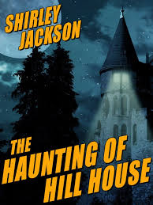
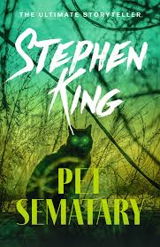
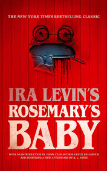
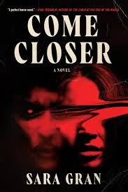
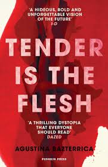
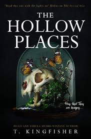
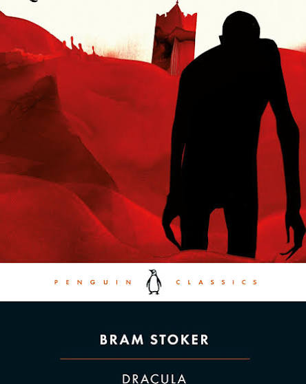
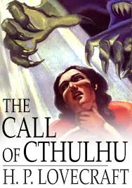
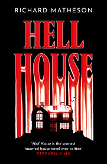
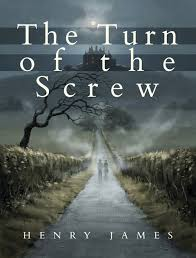
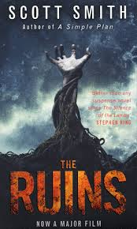
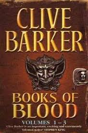
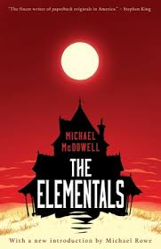
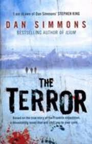
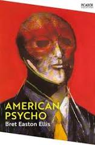
Told through the pieced-together notes of a late professor, this novella uncovers a global cult worshiping ancient, god-like extraterrestrial beings. The investigation reveals that humanity is insignificant in the face of massive, slumbering cosmic horrors waiting to reclaim the Earth.
A young governess takes a job caring for two orphaned children at a remote English country estate. She soon begins seeing the apparitions of two former servants and becomes convinced they are trying to corrupt the children's souls, leaving readers to wonder if the ghosts are real or in her head.
This landmark six-volume short story collection reimagined modern horror with visceral body horror, dark fantasy, and transgressive terror. Stories like "The Midnight Meat Train" and "In the Hills, the Cities" push physical and psychological boundaries in unforgettable ways.
Two wealthy Southern families retreat to their isolated Victorian beach houses on the Alabama coast after a matriarch's funeral. Alongside their two occupied homes sits a third, abandoned house slowly being swallowed by blinding white sand and harboring a malevolent presence.
Set in late-1980s Manhattan, wealthy investment banker Patrick Bateman spends his days obsessing over designer suits, status symbols, and exclusive restaurants. By night, he descends into extreme, graphic violence as a serial killer, blurring the line between reality and psychotic delusion.